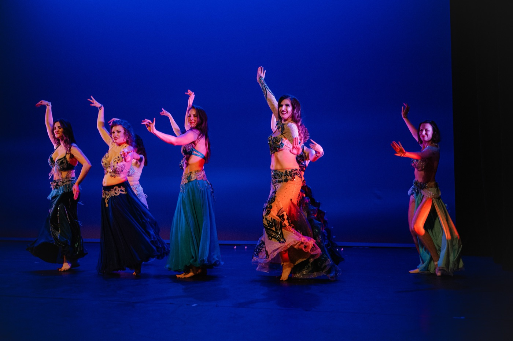
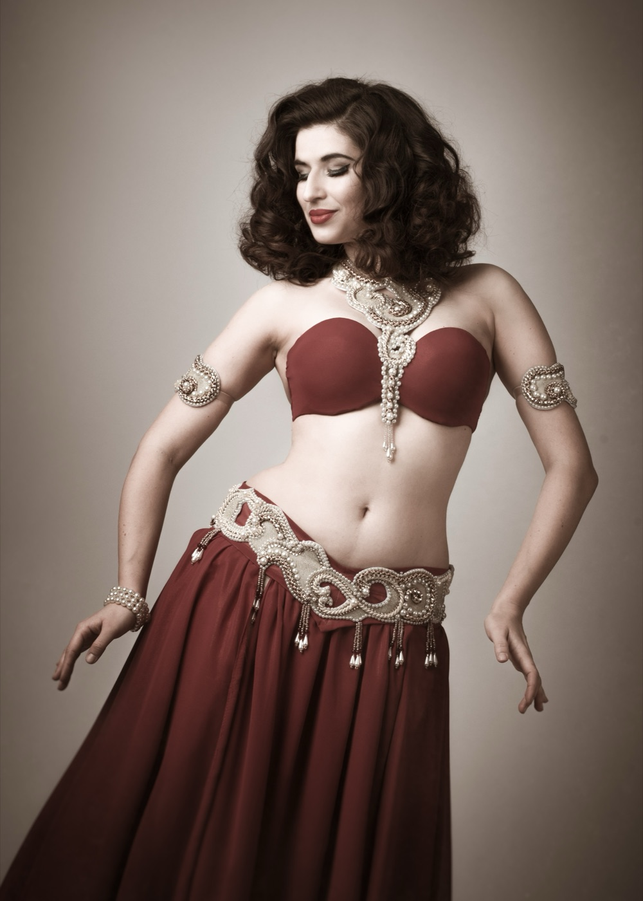
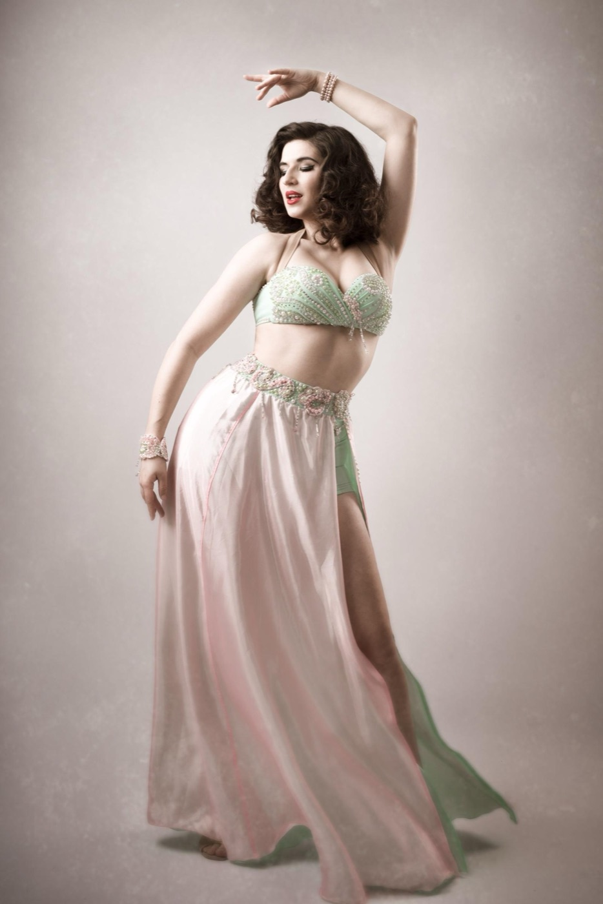
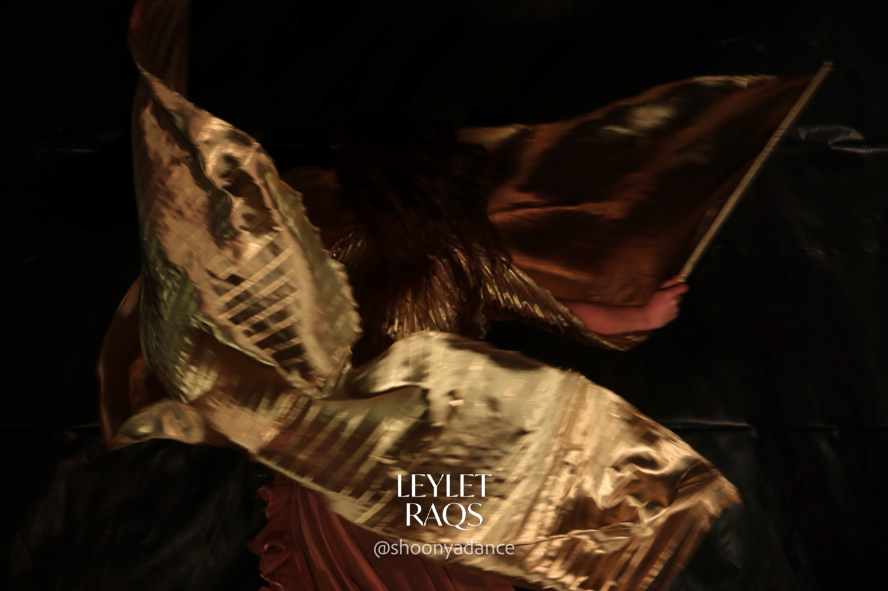

Classical Raqs Sharqi
The elegant, expressive core of Egyptian bellydance — line, musicality and presence.

Ghent's International Bellydance Festival
Night of Dance — workshops, live music and galashow. Ghent's international Raqs Sharqi (Egyptian bellydance) festival since 2023.
Curated by Lenka Badriyah · Co-organised with Shoonya Dance Centre
What is Leylet Raqs
A festival for the love of Raqs Sharqi.
Leylet Raqs — "Night of Dance" — is Ghent's annual international Raqs Sharqi (Egyptian bellydance) festival, held every year since 2023. Each edition gathers dancers, historians, musicians and lovers of Egyptian culture from across the world to honour the roots of the art and to celebrate it as a living, breathing tradition.
An edition unfolds as a weekend under one roof: workshops for every level, lectures and panel discussions, an evening galashow performed live with musicians on stage, and an opening party that carries on into the night. It is as much a gathering of a community as it is a programme of classes.
Curated by Lenka Badriyah
Co-organised with Shoonya Dance Centre · Ghent

What to expect
Every edition follows the same arc — from the opening party on Friday to the closing circle on Sunday, each day building on the one before.
Friday
Saturday
Sunday
Workshops
Every edition explores the breadth of Raqs Sharqi — Egyptian bellydance, from its classical heart to its folkloric roots and contemporary edges — led by international guest teachers invited from across the world.
The elegant, expressive core of Egyptian bellydance — line, musicality and presence.
The earthy, soulful folk dance of the people — grounded, improvised, deeply felt.
The cinematic glamour of Cairo's golden age of dance and film, revived for the stage.
Regional Egyptian traditions — the dances that carry the country's living heritage.
Working with veil and other props to extend the line of the body through movement.
Focused sessions on the craft — arms, layering, isolations and control.
Dancing the music — listening, phrasing and telling a story through the body.
Where Raqs Sharqi meets other forms — contemporary explorations of the dance.
Alongside the workshops, each edition brings lectures and panel discussions, an evening showcase, and live music — the full programme and guest teachers are announced for every edition.

A Czech dancer based in Belgium, Lenka has spent over fifteen years teaching and performing Raqs Sharqi — as a soloist and within ensembles. She danced for a decade alongside Jillina in Bellydance Evolution, leaving her mark in more than sixty shows across the globe.
A specialist in Golden Era bellydance and devoted to its history, she curates Leylet Raqs as a love letter to the art and the community that keeps it alive.
Curator of Leylet Raqs · Co-organised with Shoonya Dance Centre
Good to know
Leylet Raqs — "Night of Dance" — is Ghent's annual international Raqs Sharqi (Egyptian bellydance) festival, curated by Lenka Badriyah and co-organised with Shoonya Dance Centre. Each edition is a weekend of workshops, lectures, live music and performance celebrating the heritage of Egyptian dance, with guest teachers from across the world.
Yes. Raqs Sharqi is the traditional Egyptian form of bellydance, so Leylet Raqs is at heart an international bellydance festival — bringing teachers and dancers from across the world to Ghent every year. "Raqs Sharqi" literally means "dance of the East" and is simply the dance's Egyptian name.
Everyone. Workshops run from first steps to advanced, and the lectures, showcase and parties welcome dancers and dance-lovers alike. All levels are welcome.
At Shoonya Dance Centre, Stapelplein 41, 9000 Gent — a ten-minute walk from Gent-Dampoort station.
Leylet Raqs is held annually, typically in autumn or winter. Dates for the next edition are announced on Instagram @leylet_raqs_festival.
Registration opens together with each edition's programme, through Shoonya. A Shoonya ID is required for every participant — you can create one for free when registration opens.

Be part of it
Follow @leylet_raqs_festival for the next edition's dates, programme and guest teachers — and step into a weekend built around the love of Raqs Sharqi.